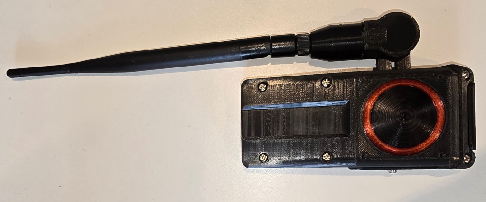
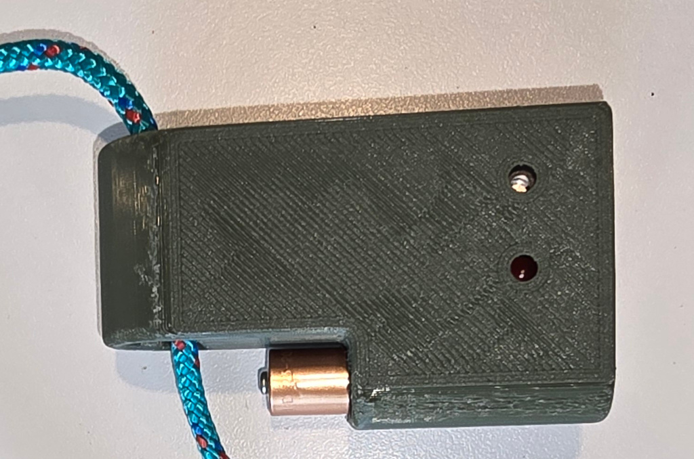
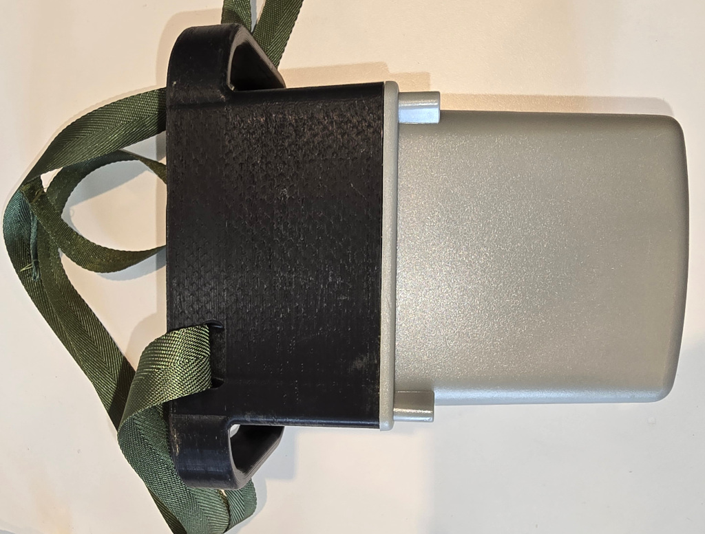
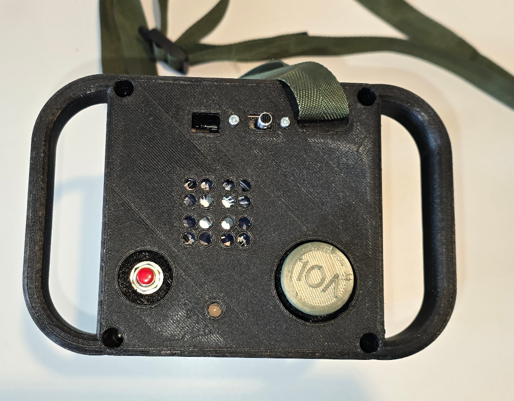

Q-Prop Creations
Radio Beacon and Direction Finder
The classic fox hunt, or down pilot game mode. The pilot has an emergency locator beacon, the rescue team have a direction finder with a fairly long range, the enemy have detectors that click like a geiger counter when the beacon is close.
Everything here uses WiFi, the beacon is a WiFi access point an dteh two detectors are simply clients.




